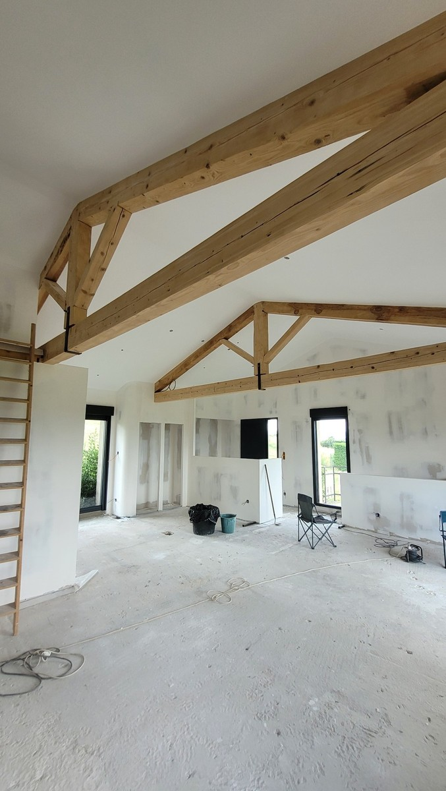
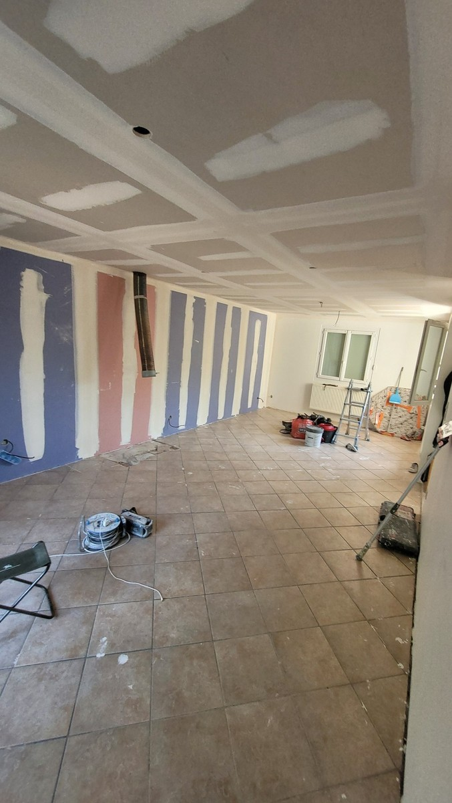

Placo neuf
Traitement des raccords entre plaques après création d’une cloison, d’un doublage ou d’un faux plafond.
Pose et reprise de bandes à joints sur cloisons, doublages et plafonds en plaques de plâtre, avec enduits et préparation du support avant peinture.
Les bandes à joints assurent la continuité entre les plaques de plâtre. Leur pose et leur finition doivent être adaptées au support pour limiter les défauts visibles une fois la peinture appliquée.
Traitement des raccords entre plaques après création d’une cloison, d’un doublage ou d’un faux plafond.
Correction de zones décollées, fissurées ou irrégulières lorsque le support permet une reprise localisée.
Enduits, ponçage et contrôle du support avant impression puis mise en peinture.
Traitement des raccords entre plaques de plâtre, avant ponçage et mise en peinture.


Le travail peut s’intégrer à un chantier de placo plus large ou à une préparation avant peinture. Pour le chiffrage, indiquez les surfaces, la nature du support et ajoutez quelques photos si possible.
Oui, le périmètre peut être limité aux bandes et à leur finition ou intégré à un chantier de placo et de peinture. Le devis dépend de l’état des plaques, des longueurs de joints et du niveau de finition attendu.
La mise en peinture intervient seulement après séchage suffisant des enduits et préparation du support. Le délai dépend notamment des produits utilisés, de l’épaisseur appliquée et des conditions du chantier.
Une reprise est possible dans de nombreux cas, mais il faut d’abord vérifier l’état du support et la cause du défaut pour choisir une réparation adaptée.
Pas systématiquement. Un ratissage plus large peut être utile lorsque l’état général du mur ou du plafond nécessite une remise à niveau avant peinture.
La commune, le type de support, les surfaces ou longueurs approximatives, l’état actuel et quelques photos permettent de préparer un premier échange plus précis.
{kind=link}
{kind=link}